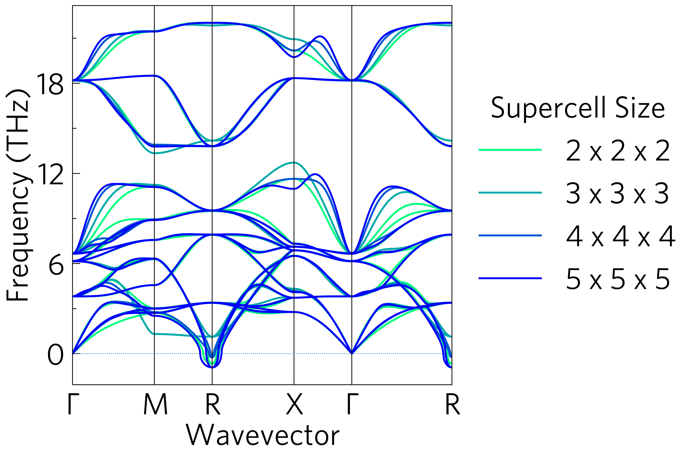

Gallery¶
This is a gallery of some things you can do in ThermoPlotter with brief explanations. More details on each of the plots, including the scripts and specific commands used are available in the examples, and we also have tutorials!
Hint
Click on the images to see the script which generated them.
At its simplest, ThermoPlotter is a way to quickly plot useful data
from either a python script or the command line, such as the classic
ztmap heatmap (the power factor pfmap is also available):

Click on the plot to see the script, or one could use
tp plot ztmap boltztrap.hdf5 -k kappa-m<xxx>.hdf5 -c '#800080' -d x
A related plot we hope people find useful for screening materials to
run three+ phonon calculations on is the kappa-target plot, which
calculates the lattice thermal conductivity required to reach a given
ZT, in this case 2.

tp plot kappa-target boltztrap.hdf5 -c '#008080' -d x
Or on the analytical end of the process, zdiff and pfdiff allow
comparison among different datasets.

tp plot ztdiff <x>/boltztrap.hdf5 <y>/boltztrap.hdf5 -k <x>/kappa-m<xxx>.hdf5 <y>/kappa-m<yyy>.hdf5 -l <x> <y>
Slightly more complex plots also with command line scripts are the phonon dispersions, which can be overlayed and plotted with DoSs.
tp plot phonons <list of band.yamls> -l <list of labels> -t 'Supercell\ Size'

tp plot phonons band.yaml -c '#ff8000' -d projected_dos.dat --doscolour '#ffff00' '#00ffff'
This is where some of the more useful functions of ThermoPlotter
come in, e.g. the rescaling of the x axis in the former plot, and the
simplicity of compound axes in the latter.
There are command-line script, but the main functionality is intended as a python package, which enables much more customisable plotting, to enable nicely formatted multi-axes plots…

...and multi-plot axes, to highlight particular interactions.
As well as projecting third-order phonon properties onto each other as above, so below we see there are also a number of functions for projecting these properties onto phonon dispersions. The former is an oft plotted widening of the bands due to scattering,1 and the latter shows the same data, but in a more quantitative way.

tp plot wideband band.yaml kappa-m<xxx>.hdf5 -c '#000000' '#ff0000' -s dark_background

Besides plotting, ThermoPlotter offers a number of ways to streamline
trnasport property workflows, from generating more efficent input files
(tp gen) to data consolidation (tp.utilities.merge) and
retrieval (tp.utilities.resolve and tp get), many of which are
outlined in the tutorials. Most of these don’t lend themselves to a
gallery, except the ability to add gaussian smearing to a DoS plot
during plotting, removing the need to rerun e.g. Phonopy or maintain
multiple data files.

The right-hand plot can be plotted with:
tp plot dos projected_dos.dat --atoms "Ba Sn O O_2 2" --sigma 0.2 --location 1 -c magenta -c cyan -c red -c orange
There are also a number of cosmetic options in the python interface, which may be of interest outside the main scope of ThermoPlotter, e.g. the custom colourmaps, legend formatting tools and axes labels.
Reference¶
@article{Maradudin1962,
title={Scattering of neutrons by an anharmonic crystal},
author={Maradudin, AA and Fein, AE},
journal={Physical Review},
volume={128},
number={6},
pages={2589},
year={1962},
publisher={APS}
}